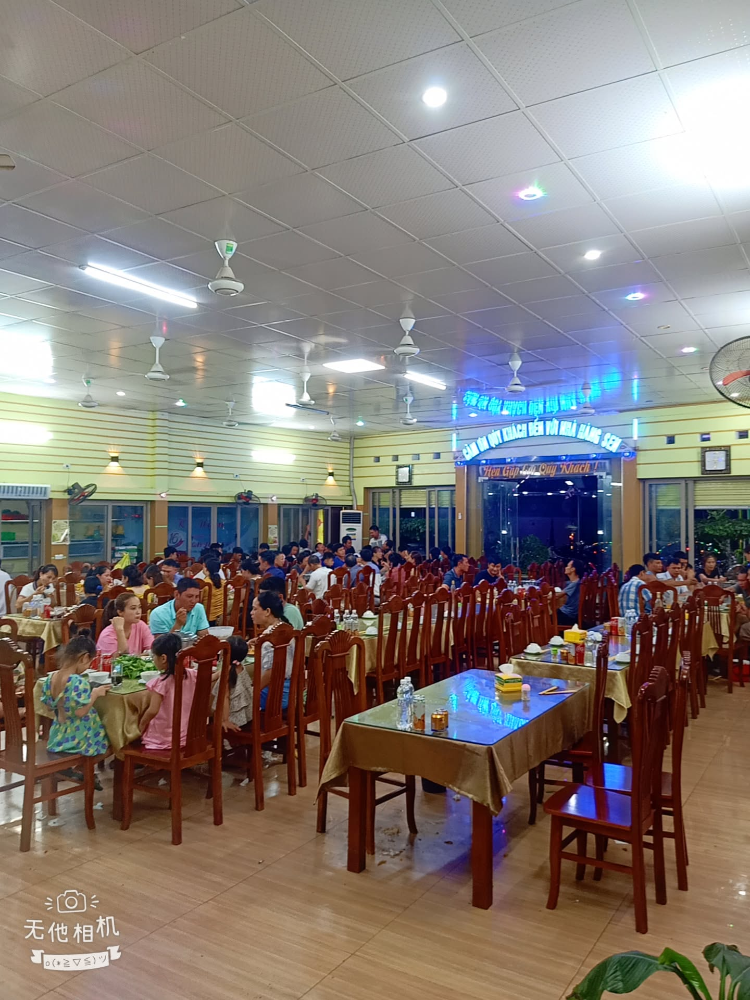

Hải sản tươi sống
Chọn nguyên liệu tươi, chế biến theo nhiều kiểu: hấp, nướng, rang muối, lẩu hoặc làm mâm tiệc.

Về Nhà Hàng Sen
Nhà Hàng Sen phục vụ hải sản tươi sống, món ăn gia đình và các mâm tiệc theo nhu cầu. Không gian rộng, sáng và gần gũi, phù hợp cho bữa cơm gia đình, liên hoan, sinh nhật hoặc gặp gỡ bạn bè.
Câu chuyện của Sen
Sen tập trung vào những món quen thuộc nhưng được chọn nguyên liệu kỹ và chế biến đậm vị. Khách có thể gọi món lẻ theo thực đơn hoặc nhắn Zalo/Facebook để được gợi ý combo theo số người, ngân sách và khẩu vị.


Chọn nguyên liệu tươi, chế biến theo nhiều kiểu: hấp, nướng, rang muối, lẩu hoặc làm mâm tiệc.
Phù hợp nhóm gia đình, bạn bè, liên hoan và các buổi gặp mặt đông người.
Tư vấn món theo số khách, mức chi và khẩu vị để mâm ăn vừa đủ, dễ dùng.
Liên hệ tư vấn
Gửi số người, ngân sách dự kiến và món muốn ưu tiên, nhà hàng sẽ tư vấn mâm ăn qua Zalo hoặc Facebook.
Điện thoại 0972 616 855
Địa chỉ Tiểu khu 7 - TT. Thiệu Hóa, Thanh Hóa
Vị trí nhà hàng
Tiểu khu 7 - Thị trấn Thiệu Hóa, Thanh Hóa.